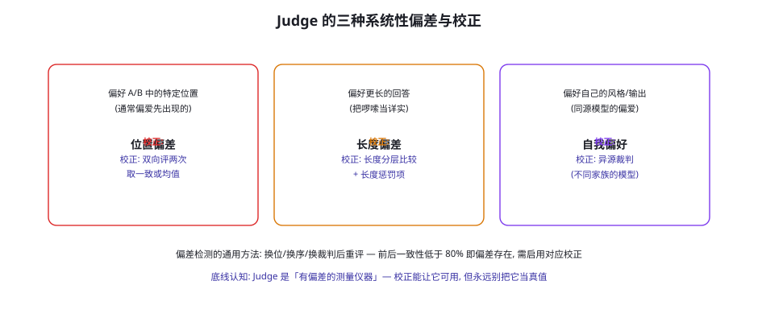
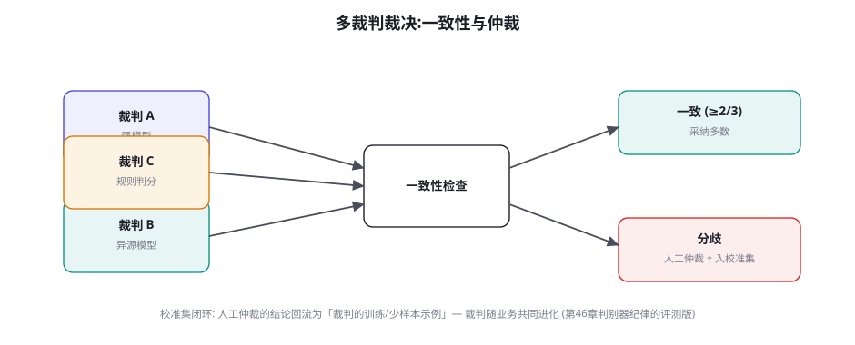

LLM-as-Judge 与评测的可信度
评测篇的最后一章直面一个绕不开的现实：开放域任务的判定终究要交给另一个 LLM。LLM-as-Judge 便宜、可扩展、能处理语义——但它有位置偏差、长度偏差、自我偏好这三种系统病，以及「裁判是谁养的」这个根本问题。本章讲裁判提示的设计、三种偏差的检测与校正、多裁判的一致性架构与校准集闭环——让「用模型评模型」从玄学变成有误差预算的测量学。
什么时候必须用 Judge：判定的光谱
把判定需求排成一条「客观性光谱」，Judge 的位置就清晰了：光谱左端——可执行判定（测试通过、终态断言、AST 匹配）零裁判依赖，能用则用（第 51/52/54 章的全部实践）；光谱中段——「有参考答案的语义任务」（摘要是否覆盖要点、翻译是否忠实）——半客观，可用 Judge 但要给参考答案与评分量表；光谱右端——开放生成（说服力、文风、有用性）——只能 Judge（或人类），此时 Judge 的可信度工程成为评测质量的全部。一条铁律贯穿光谱：Judge 是「最后的手段」，不是「默认选项」——每次把判定交给 Judge 前先问：这个维度能不能降维成可执行断言（第 53 章「锚点法」）？能不能拆出「客观内核 + Judge 外壳」（客观内核做门禁，Judge 只补语义分）？Judge 用量每减少一分，评测的确定性与成本都改善一分。
| 判定维度 | 客观性等级 | 推荐判定方式 | Judge 的角色 |
|---|---|---|---|
| 任务是否完成 | 高（可断言） | 终态断言 / 测试 | 无（禁用 Judge） |
| 调用是否正确 | 高（结构比对） | AST / 可执行判分 | 无 |
| 事实准确性 | 中（可锚定） | 锚点法 + 引用核对 | 补充核对未锚定主张 |
| 要点覆盖度 | 中（有参考） | Judge + 参考答案 | 主判（带参考） |
| 有用性 / 文风 | 低（开放） | Judge 比较式 | 主判（双向 + 委员会） |
表格的用法示例：一次「客服回复质量」评测的完整判定设计——任务完成度用数据库断言（退款是否执行）、事实准确性用锚点法（回复中的订单号/金额与数据库核对）、要点覆盖用带参考的 Judge（政策要点清单）、语气与有用性用比较式 Judge 委员会——四层判定各司其职，Judge 只碰了后两层。这个「漏斗式判定设计」的模式可直接迁移：把评测维度的判定方式按表格逐行填一遍，Judge 的用量自然被压到必要最小。
三种系统性偏差与校正

三种偏差的机制与校正逐一拆解：① 位置偏差——成对比较时 Judge 显著偏爱某个位置（研究发现多为「先出现的」），机制与人类的「首因效应」同源——对策是双向评两次（A-B 与 B-A 各评一次），两次一致才采纳、不一致取「平局」或人工仲裁；成本翻倍但位置效应被消除。② 长度偏差——长回答系统性得分高（「写得多 = 认真」的表面关联），对策两件套：长度分层比较（只在长度相近的候选间比较）与提示里的显式反偏（「长度不参与评分，冗余内容应扣分」——有效但不可靠，只是辅助）。③ 自我偏好——Judge 偏爱与自己同源的输出（同模型、同家族、同风格），这对「用 GPT-4o 评 GPT-4o 生成的数据」的实践是致命警告——对策是异源裁判：裁判与被评对象来自不同模型家族，多裁判架构里刻意混血（第 28 章多 Agent 协作「异构性防共谋」的评测版）。三种偏差的通用检测法：换位/换序/换裁判重评的一致性检验——一致性低于 80% 就说明对应偏差在起作用，需要启用校正并记录「校正前后的分数差」作为误差预算。
把 Judge 从「裁判」重新定义为「有系统误差与随机误差的测量仪器」，评测的设计逻辑就完全变了：系统误差——三种偏差 + 量表理解偏差（Judge 对 1-10 分的理解与你的意图不符）——用校正与校准压制；随机误差——同一输入多次评分的方差（温度、采样路径）——用固定种子/低温 + 多次评分取均值压制。误差预算的实践：给每个 Judge 化的评测维度标注「测量不确定度」（如「有用性 7.2 ± 0.4」——±0.4 来自重评方差与裁判间分歧），报告与门禁都在不确定度的框架内解读（7.2±0.4 与 7.4±0.4 的「提升」不显著，不触发庆祝；与 6.5±0.4 的「下降」显著，触发调查）。Judge 化评测的门禁阈值必须大于测量不确定度——否则门禁在噪声上触发，团队对评测的信任在几次误报后崩塌。这一条是 LLM-as-Judge 工程化与「随手让 GPT-4 打个分」的分水岭。
裁判提示的设计清单
裁判提示的设计八条（按重要性）：① 评分量表具体化——不给「1-10 打分」，给「1 = 完全没回答问题；3 = 部分回答但有事实错误；5 = 正确完整但冗长……」——量表锚点越具体，Judge 间一致性越高；② 判据前置 + 输出结构化——先让 Judge 列出「发现的事实主张并逐条核对」，最后才给分——「先分析后结论」的顺序让 Judge 沿用推理模型的长处，也让判分依据可复核（第 55 章「判定 + 依据落库」）；③ 参考答案与背景注入——有参考答案必须给（有参考的 Judge 一致性远高于无参考）；④ 「不知道」选项——允许 Judge 输出「无法判定」（信息不足/超出能力），比硬打分可靠；⑤ 反偏差声明——长度/位置/风格不参与评分的显式声明（辅助手段，第 57.2 节）；⑥ few-shot 校准样本——3~5 个「带标准评分的示例」（来自校准集，见下节）——这是把「你的评分标准」传给 Judge 的最有效手段；⑦ 温度 0 或固定种子——压制随机误差；⑧ 元信息隔离——不告诉 Judge 哪个回答来自哪个模型（防品牌偏见）——听起来显然，实践里常漏（轨迹数据自带的模型名字段必须剥掉）。
「量表锚点」的写法值得给一个完整的正面示例，因为它是八条清单里对一致性提升最大的单条。反面教材（常见错误）：「请对回复的有用性打 1~10 分」——Judge 会自行脑补标准，不同 Judge、同一 Judge 的不同次调用之间方差巨大。正面示例（可直接抄改）：
评分量表 (只打整数, 只打档位分):
5 = 完全解决: 直接回应了用户诉求, 给出了正确的具体动作/信息,
用户无需追问即可继续。附带的关键信息全部准确。
4 = 基本解决: 回应了核心诉求且信息正确, 但遗漏了 1 个次要事项
(如未提醒时效), 或表达啰嗦但无错误。
3 = 部分解决: 方向正确但关键信息缺失或模糊 (未给具体金额/日期),
用户必须追问才能行动。
2 = 未解决但有帮助: 没有直接回应诉求, 但给出了正确的替代路径
(如「此项需人工办理, 入口是…」)。
1 = 无效或有害: 答非所问 / 信息错误 / 承诺了不该承诺的事 /
编造了不存在的政策。
评分前必须先列出: (a) 用户的核心诉求是什么 (b) 回复中的事实主张
逐条是否可验证 (c) 判断过程中不能使用「长度」「语气流畅度」作为
加分或减分依据。示例里藏着三个量表设计的通用技巧：① 档位行为化——每档描述「用户能否行动」而不是「质量感受」——行为锚点的裁判间一致性远高于形容词锚点；② 最高档带排除条件（「附带信息全部准确」）——防止「看起来漂亮但有错」的回答拿满分；③ 评分前置动作（列诉求、验主张）——把「先分析后结论」做进量表本身。5 档优于 10 档（档位越多方差越大），整数档优于小数（伪精度）。
「先分析后结论」的提示结构再补一个量化注脚：社区多项研究（含 G-Eval 的消融）一致显示，让 Judge 先输出分析过程再给分数，与人类评分的相关性提升 5~15 个百分点——这个提升幅度与「换一个更强的裁判模型」的效果相当，但成本为零。背后的机制与推理模型的能力同源（第 43 章）：结论前的显式推理压制了「直觉式打分」的方差。工程细节：分析过程的结构要约束（「列出事实主张并逐条标注可验证性」比「请分析这个回答」好）——自由格式的分析会让 Judge 跑题到文风评论；分数必须放在输出的最后一行（JSON 的独立字段）——解析时只取该字段，分析过程另存为「判定依据」（第 56 章判分层的落库要求）。顺带的成本提示：先分析后结论会多消耗 30~50% 的输出 token——Judge 的用量本来就应压到最小（光谱铁律），这里的增量是在「必要的最小」之上的合理开销。
「元信息隔离」在实践中还有一个隐蔽的泄漏通道值得点名：「指纹泄密」——即使剥掉了模型名，回答的内容特征本身会暴露来源（某模型特有的开头语、格式习惯、emoji 风格——Judge 熟悉这些「写作指纹」，能推断出处并触发自我/品牌偏好）。完全的去指纹化不可行（改写会污染被评内容），务实的缓解：① 格式归一化——评测前把所有候选回答统一过一遍轻量格式清洗（去 markdown 装饰差异、统一标题层级）——「无关格式差异」是位置/风格偏差的另一张温床；② 混洗匿名编号——候选以随机代号（Candidate X/Y）呈现，代号映射只在判分后解析；③ 「来源盲测」的自检——每月做一次：让 Judge 看 10 个候选并猜来源——猜对率显著高于随机（>40%）就说明指纹可辨，判分结果要加「来源偏好可能存在」的备注。三条的成本都不高，但它们堵的是「评测在结构上就无法公平」的暗道——判分公平性是设计出来的，与判分器的强弱无关。
多裁判与校准集闭环

多裁判架构的两个组件：① 裁判委员会——2~3 个异源 Judge（不同模型家族 + 至少一个规则判分器「压阵」），一致性规则（≥2/3 一致采纳，否则仲裁）——注意委员会提高的是「稳健性」不是「真值」：三个同源裁判的一致是「共同的偏差」，异构性是委员会的前提；② 校准集闭环——维护一个 50~200 条「人工评分金标准」的校准集，用途三件：Judge 上线前的资格测试（对校准集的评分与人类的相关系数 ≥0.8 才上岗）、提示迭代的效果验证（改提示后重跑校准集对比）、运行时的漂移监控（每周抽 20 条校准样本混进真实评测流，Judge 对它们的评分漂移超阈值即告警）。闭环的最后一环：人工仲裁的结论回流为 few-shot 示例——裁判的「评分标准理解」随业务进化——这与第 46 章奖励模型的「对抗更新」、第 45 章「课程随能力进化」是同一个元模式：判定系统必须与被判定系统共同进化，静止的裁判必然被超越或被利用。
① 「万能裁判提示」——一个提示评所有维度（有用性/准确性/文风一把抓）——维度间的判据互相干扰，一致性全面下降；正确形态是每维度一提示、一量表、一校准集。② Judge 评 Judge 的套娃——用另一个 LLM 检查 Judge 的判定（两层 Judge）——每层都引入偏差，方差相乘不相消；套娃的正确替代是「规则可执行层 + 单层 Judge + 人类仲裁」。③ 分数的通货膨胀使用——Judge 给的 8.5 分被当成绝对成绩汇报（「用户满意度 8.5/10」）——Judge 分数只有「相对比较」的效度（A 比 B 好），没有「绝对映射」的效度（不等于人类满意度 85%）——对外汇报要么换算（用校准集建立 Judge 分数 ↔ 人类分数的映射）、要么改口径（「在本评测的量表上得 8.5」）。④ 校准集的一次性——上线时测过一次就封存——Judge 模型升级、被评对象的分布漂移都会让旧校准失效，校准集是活资产（季度补充新样本、月度漂移抽检）。
亲手测出你自己的 Judge 的三种偏差：挑 20 对业务回答（A/B 各 10 对，长度差异明显），写一个通用裁判提示，然后跑四轮实验——① 原序评分；② 换序评分（B-A）——统计位置偏差率（换序后结论翻转的比例）；③ 长度分组——把 20 对按长度差分组重评，看长回答的优势幅度；④ 换裁判——换一个异源模型重跑①②，对比结论一致率。四轮跑完你手里的不是一篇论文阅读笔记，而是「你的业务域里、你的裁判提示的」误差预算表——下一节的门禁阈值设置直接用它。
多裁判的「成本账」与「何时降级」也值得算清楚：委员会（3 裁判 × 双向评价）的成本是单裁判单向的 12 倍——它只应该用在「高价值低频」的判定上（发版验证、竞品对比、校准集构建）；日常高频判定（快测门禁里的语义维度）用「单裁判 + 换序」的双向折中（成本 2 倍，位置偏差已除）。降级的触发条件写进评测配置：「同一提示连续两周双向一致率 >95%」 → 降级为单向 + 每周一致性抽检——一致性稳定的 Judge 不需要每次都双向（就像稳定工序不需要全检）。反向的升级触发：漂移监控告警（校准样本评分漂移 >0.3）→ 临时恢复双向 + 触发裁判提示复审。这套「升降级规则」让 Judge 的成本随可信度动态调整——比固定配置省 60~80% 的 Judge 开销，同时保住了测量质量的红线。
Judge 在「生产环境」的另一个身份值得预埋一笔（第 6 部分展开）：不只是评测工具，还是运行时组件——在线的质量抽检（每 N 条回复抽一条打分，低于阈值的进人工队列）、动态路由的信号（第 32 章模型路由的「质量探测」）、以及「自我修正回路」的评分器（第 22 章 reflection 的 critic）。运行时 Judge 与评测 Judge 共享全部的本章纪律（异源、量表、校准），但多出两条运行时特有的约束：延迟预算（在线抽检不能拖慢响应——Judge 要用小模型或异步化）与对抗暴露（生产流量里的用户会试探 Judge 的标准——「它喜欢什么样的回答我照着说」——评分标准因此要定期轮换，第 55 章防刷分思想）。评测 Judge 与运行时 Judge 是「同一门测量学在离线与在线的两次应用」——先在评测里把校准纪律练熟，再迁移到生产，顺序不要颠倒。
补充一个实操小贴士作结：Judge 化评测的调试「三看」——判分不符预期时按序检查。一看量表：是不是锚点太抽象（「好」与「很好」的区别是什么？）；二看分析：Judge 的分析过程是否跑题（在评文风而量表考事实）；三看示例：few-shot 校准样本是否覆盖了当前样本的形态（校准集全是短回答、来了个长报告——Judge 没见过这种形态）。三看解决 80% 的「Judge 乱打分」投诉——剩下的 20% 通常是真的「这维度不适合 Judge」——回到光谱，换判定方式。调试的顺序本身就是纪律：先怀疑量表与样本，最后才怀疑模型——「Judge 不行」的投诉里，绝大多数是「量表没写好」的锅。
三个高频疑问
Q：Judge 与被评对象用同一个模型，到底可不可以？可以，但要满足三个条件，缺一不可：① 相对比较而非绝对评分（自我偏好主要污染「绝对分」，比较任务里双向评价可以稀释）；② 被评对象与裁判的「生成条件」差异大（被评的是小模型/历史版本，自我偏好的方向性弱）；③ 一致性检验通过（换序一致率 >85%、与异源裁判的一致率 >80%）。三个条件都满足的同源 Judge 是「预算紧张下的合理妥协」，任何一条不满足都必须异源。另一个工程变体：同源但「人格分离」——裁判提示里明确「你是独立的质量审核员，与生成系统无关」并给异源的 few-shot 示例——能部分削弱自我偏好（有实证改善但不如真异源），在「只有一家模型可用」的场景下是次优解。
Q：怎么向管理层解释「Judge 分数不能对外当满意度」？用一个等价的类比开始：「让 AI 给菜品打 8.5 分，不等于顾客满意度 85%」——然后给两个可操作的替代方案：① 建立「翻译层」——用校准集里的人工评分与 Judge 分数拟合映射（回归或分段表），对外只报「翻译后」的估计值并附「基于 N 条人工标注的映射」的口径说明；② 改用「相对叙事」——「新版在所有维度上优于旧版（Judge 比较胜率 78%）」——相对陈述的效度与 Judge 的能力边界完全匹配，不需要翻译。两个方案都要求一件事：Judge 分数的「效度边界」写进评测字典（第 53 章指标命名纪律的延伸）——分数能用在哪、不能用在哪，白纸黑字，防止下一场「8.5 分是怎么来的」的解释循环。
Q：人类标注贵，校准集能不能用「强模型标注」代替人工？能，但只有一半效度——要区分校准集的两种用途：「一致性测试」用途可以（用强模型金标准测候选 Judge 与强标准的一致性——比没有标准好得多，且可以海量生成）；「效度锚定」用途不行（「Judge 分数 ↔ 人类满意度」的映射必须人类标注——用模型标准「翻译」到人类标准是循环论证）。混合策略的成本结构：效度锚定的量可以很小（50~100 条，人类标注一次性投入 + 季度补充）、一致性测试的量可以很大（数千条模型标注，免费流水线）——小而真的人类锚 + 大而全的模型标尺，是预算受限团队的最优组合。人类的 50 条锚还有个隐藏价值：它们是团队「评分标准」的讨论结晶——标注过程本身在统一团队对「什么算好」的认知（第 56 章工作坊的校准效应）。
本章在全书网络中的连接：上游是第 46 章（奖励模型——Judge 是它的评测域同类物，偏差与黑客的家族相似）、第 50 章（口径与不确定度——误差预算的方法论源头）；横向收官第 51-56 章的评测篇（可执行判分是光谱左端的常驻首选）；下游通向第 60 章（HITL——仲裁与闸门的人类角色设计）、第 63 章（幻觉治理——Judge 对事实性维度的局限）、第 57 章 self-reference（Judge 自身的评测——校准集即 Judge 的评测集）。复习锚点：光谱定位铁律、三偏差图（57-1）、八条提示清单、委员会图（57-2）、误差预算思维、四反模式。
给校准集的「人工标注对齐」补一个流程细节，因为它决定了那 50 条锚的成色：标注前的「标准对齐会」——3 名标注者先各标 10 条公共样本，现场对齐分歧（为什么这条你打 3 我打 4？分歧点往往是「量表理解」而非「品味差异」），把分歧结论写回量表锚点（第 57.3 节的量表就是这么迭代出来的）——对齐会开完，正式标注的标注者间一致率（Krippendorff's alpha）通常能从 0.4 提到 0.7+。alpha 值是校准集的出厂合格证：低于 0.5 的校准集测不出 Judge 的问题（噪声淹没了信号），先修标准再标Judge。一致性没有达标就上线的校准集，是「用错误的尺子校准仪器」——比没有校准更糟，因为它给了整个评测体系一个虚假的「已校准」徽章。标注流程的工程细节（盲标、独立标注、仲裁规则）与第 53 章「人类基线」共享同一套规范，两处共用一份 SOP 即可。
评测篇全篇收束。七章一路走来：方法论（50）给了分类学与指标语法，三大基准域（51-53）给了任务设计的范本，工具原子层（54）给了复用度最高的地基，安全面（55）给了对抗视角，工程（56）给了落地的骨架，本章（57）给了测量学的最后一块——当判定必须交给模型时，如何让它「有误差预算地可信」。把七章合起来看，评测篇真正想建立的是一个立场：评测不是开发完成后的验收环节，而是贯穿始终的「信任基础设施」——训练需要它当靶场（第 39-49 章）、工程需要它当门禁（本章与 56 章）、业务需要它当对话语言（第 53 章指标哲学）。从下一章开始，全书进入安全篇——你会发现安全篇的许多立场（威胁建模、纵深防御、权限分级）与评测篇的方法论共享同一套工程哲学：不信任默认状态，一切显式声明，层层验证。这不是巧合——评测与安全，本质上是同一件事的两个方向：对「系统会做对」的验证，与对「系统会被带坏」的防御。
本章小结
- 判定光谱铁律：Judge 是最后手段——先问能否降维成可执行断言、能否拆「客观内核 + Judge 外壳」。
- 三偏差与校正：位置（双向评价）、长度（分层 + 反偏声明）、自我偏好（异源裁判）——换位重评做一致性检测。
- 误差预算思维：Judge 是测量仪器——标注不确定度，门禁阈值必须大于测量噪声。
- 提示八条：量表锚点、先分析后结论、参考注入、「不知道」选项、few-shot 校准、温度 0、元信息隔离。
- 委员会架构：异源 2~3 裁判 + 一致性规则 + 人工仲裁；校准集三用途（资格测试/提示验证/漂移监控）+ 仲裁回流闭环。
- 四反模式：万能提示、Judge 套娃、分数通胀、校准封存——Judge 分数只有相对效度，没有绝对映射。
自测题
- 盘点你当前评测体系里的 Judge 使用点：每个点在「判定光谱」的哪个位置？哪些可以降维成可执行断言？
- 跑本页四轮实验，填出你的误差预算表：三种偏差率各是多少？据此你的门禁阈值应该设多大？
- 为「客服回复的有用性」写一个裁判提示：按八条清单逐条对照，量表给 5 个锚点。
- 设计你的校准集 v0：50 条人工标注从哪来（谁标、标什么、怎么对齐认知）？
参考文献与延伸阅读
- Zheng, L. et al. (2023). Judging LLM-as-a-Judge with MT-Bench and Chatbot Arena. arXiv:2306.05685（位置/长度/自我偏好三偏差的系统实证）
- Wang, P. et al. (2023). Large Language Models are not Fair Evaluators. arXiv:2305.17926
- Liu, Y. et al. (2023). G-Eval: NLG Evaluation using GPT-4 with Better Human Alignment. arXiv:2303.16634（量表化 Judge 的代表工作）
- Kim, S. et al. (2024). Prometheus: Inducing Fine-grained Evaluation Capability in Language Models. arXiv:2310.08491（开源专用 Judge 模型系）
- Thakur, A. et al. (2024). Judging the Judges: Evaluating Alignment and Vulnerabilities in LLMs-as-Judges. arXiv:2406.12624
- 工程参照：openai/evals · confident-ai/deepeval（Judge 化评测的框架实现）